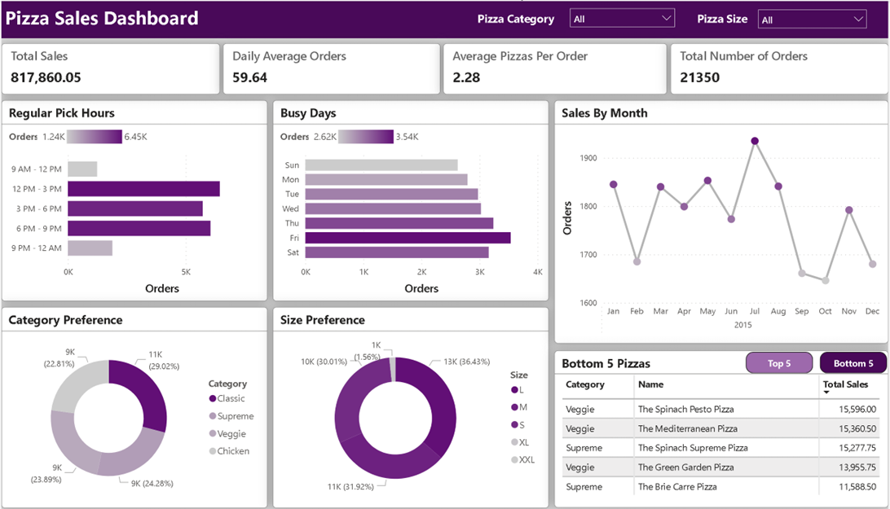
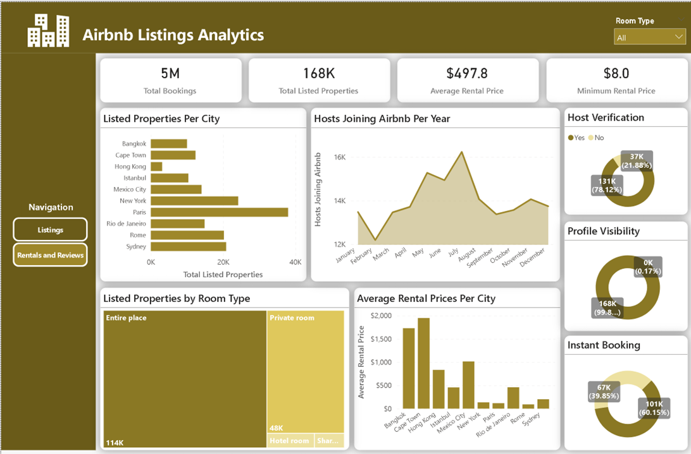

Pizza Sales Analysis
Analyzing Pizza Sales data from a Pizza restaurant to identify new areas and aspects of the business with the potential for growth
Project Deliverbales
1. How many customers do we have each day? Are there any peak hours?
2. How many pizzas are typically in an order? Do we have any bestsellers?
3. How much money did we make this year? Can we indentify any seasonality in the sales?
4. Are there any pizzas we should take of the menu, or any promotions we could leverage?
The process involved data cleaning and transformation using power pivot and DAX to make the data easier to use and create visuals. It also involved selecting appropriate chart types for the different data types and formating the report in a consistent and user-friendly manner.
The dashboard below is the final solution that provides insights to the questions above. File available upon request for an interactive experience.
AirBnB Rentals Analysis
Analyzing AirBnB Rentals data to identify the best performing AirBnB rentals markets in different cities around the world
Project Deliverbales
1. Can you spot any major differences in the Airbnb market between cities?
2. Which attributes have the biggest influence on price?
3. Are you able to identify any trends or seasonality in the review data?
4. Which city offers better value for travel?
The process involved heavy data cleaning and transformation such as getting rid of unwanted data and creating new variables and aggregating new measures using power pivot and DAX to make the data easier to visualize. It also involved selecting appropriate chart types and appropriate and consistent formatting.
The dashboard below is the final solution that provides insights to the questions above. File available upon request for an interactive experience.
